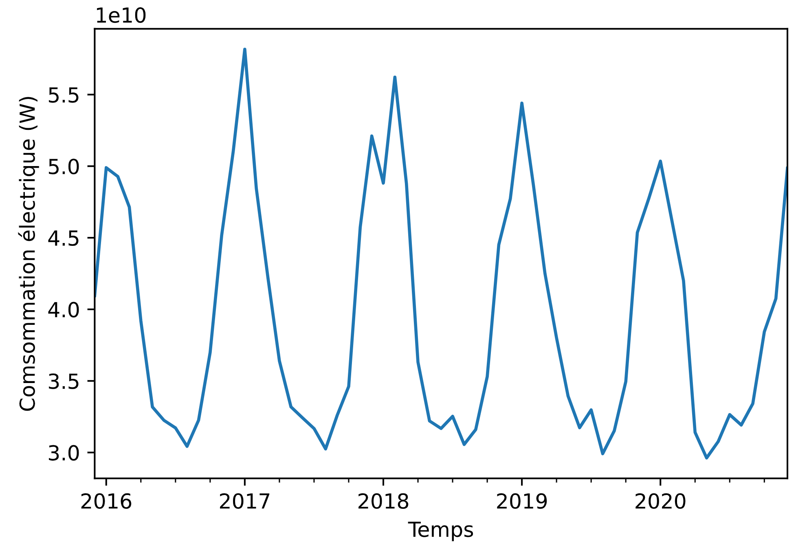
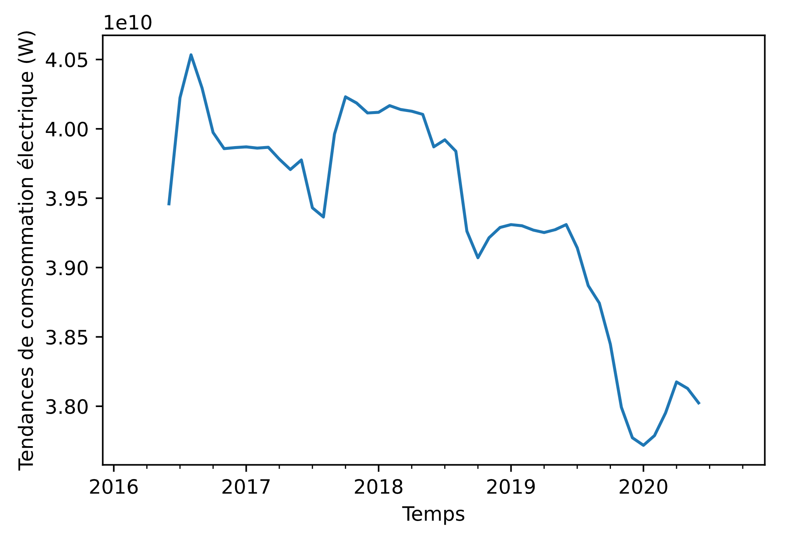
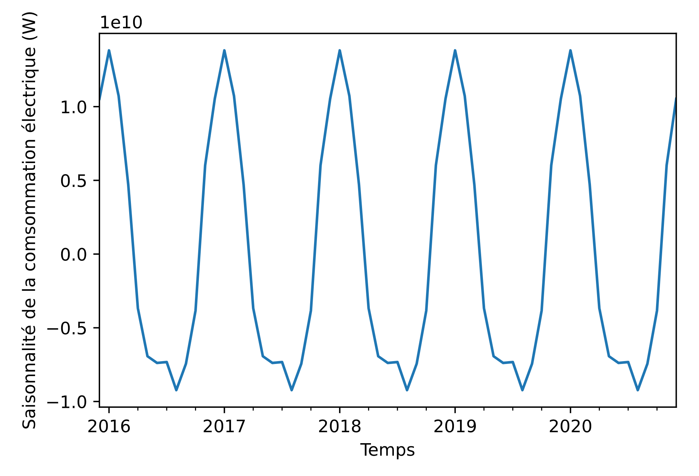
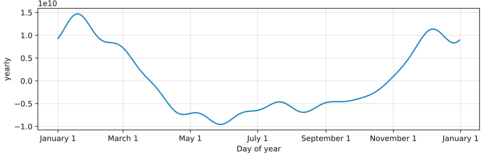
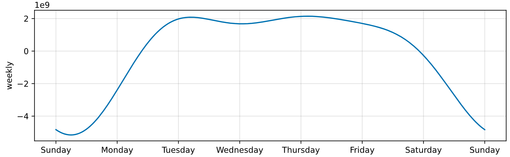
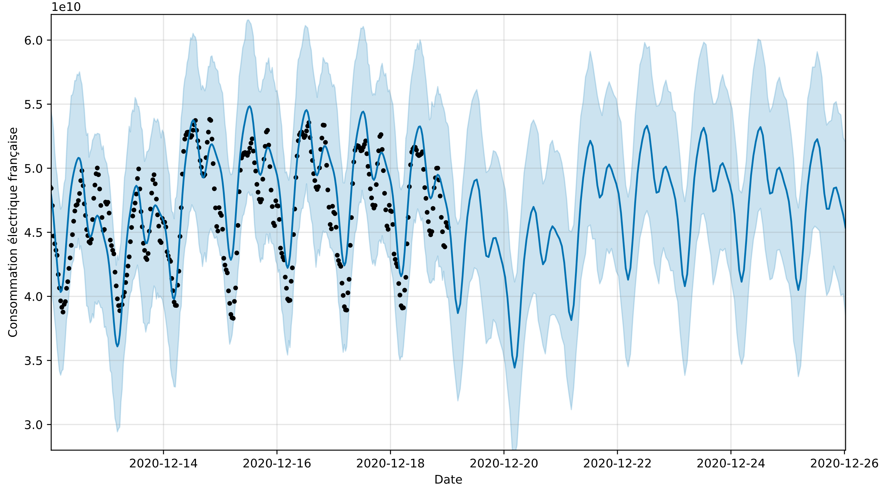

À propos du projet
Le but de ce projet est de découvrir différentes méthodes de prévisions temporelles et de les rendre visibles à partir d'une page web.
Pour les données, j'utilise l'Open Data d'Enedis. Je voulais utiliser leur API pour accéder aux données mais malheureusement, je ne pouvais pas accéder à une quantité de données suffisantes pour avoir des prévisions correctes.
J'ai choisi d'utiliser le bilan électrique au pas demi-heure pour prévoir la production et la consommation d'électricité en France car je pense que les prévisions faites pourront servir de base dans d'autres futurs projets.
Comme l'API renvoie les données en format JSON, j'ai décidé de télécharger le jeu de données dans ce format, pour ensuite pouvoir continuer d'utiliser les modèles avec les nouvelles données récupérées via l'API et ainsi passer d'un modèle en batch learning à un modèle en online learning.
De toutes les propriétés du jeu de données, je conserve seulement l'horodate et la consommation totale.
Je pensais aussi utiliser la température présente dans les data d'Enedis mais cela voudrait dire prévoir la température de la France à partir de la date et l'heure seulement. Comme ce n'est pas le but de ce projet, je garde l'idée pour potentiellement améliorer mon modèle.
Avant de commencer l'élaboration de modèles, j'analyse les données formatées à la recherche de tendances ou de saisonnalités, ce qui est visible dans la consommation d'électricité.
Pour cela, j'utilise le module satsmodel de Python qui permet d'extraire les tendances d'un jeu de données échantilloné au mois.



Le premier graphique montre l'ensemble des données, tandis que les deux suivants montrent la tendance de la comsommation ainsi que sa variation saisonnière.On remarque tout de suite la forte saisonnalité de la consommation électrique : la consommation pique en hiver avant de s'atténuer en été. De plus, globalement, la consommation électrqiue française semble diminuer.
On dit alors que la consommation d'électricté est thermosensible, car sensible à la température extérieure. RTE estime que la consommation française augmente de 2400MW pour chaque degré en moins en hiver. Cela est dû principalement au chauffage des bâtiments (un tiers des foyers français sont chauffés à l'électricité) ainsi qu'à la production d'eau chaude.
La température sera donc un facteur important à prendre en compte pour de futures améliorations du modèle.
Pour le modèle de prévision, j'utilise le logiciel Prophet développé par Facebook, car il permet d'avoir des prévisions rigoureuses tout en intégrant les effets de tendances qui existent dans les données ainsi que les dates (jours de la semaine).
Un modèle de prévisions progammé grâce à des réseaux de neurones récurrents est possible ( Tutoriel de Tensorflow ) mais demande plus de travail sur les données notamment sur la représentation numérique des dates et les effets de tendance. De plus, ils ne sont pas forcéments plus précis que les modèles Prophet.
Après entraînement sur les données, le modèles est capable de faire des prédictions mais aussi de donner différentes décompositons des données qu'il a analysé.
On retrouve par exemple la décompostion annuelle, hebdomadaire et journalière.


 On retrouve que sur une année, le pic de consommation est atteint fin janvier tandis que le minimum se trouve fin mai. Comme le modèle analyse les données à l'heure, il permet une décomposition plus fine que précédemment. On obtient alors une décomposition hebdomadaire avec un un minimum dans la nuit de samedi à dimanche, ainsi qu'une décompostion journalière avec un creux après minuit et des pics le midi et au moment du diner.
On retrouve que sur une année, le pic de consommation est atteint fin janvier tandis que le minimum se trouve fin mai. Comme le modèle analyse les données à l'heure, il permet une décomposition plus fine que précédemment. On obtient alors une décomposition hebdomadaire avec un un minimum dans la nuit de samedi à dimanche, ainsi qu'une décompostion journalière avec un creux après minuit et des pics le midi et au moment du diner.
Voici les prévisions que l'on obtient avec le modèle. Les points noirs réprésentent les données d'ENEDIS, la ligne bleu la prévision du modèle et la zone bleu claire réprésente la zone d'incertitudes du modèle. Les données vont du 12 au 19 décembre 2020, et la prévision s'étend jusqu'au 26 décembre.On retrouve la tendance hebdomadaire avec un creux le dimanche (le 13 et le 20), ainsi que les différents pics et creux lors des journées.
L'examination visuelle n'est pas suffisante pour évaluer un modèle. Pour cela, je compte mettre à jour les données et évaluer l'erreur du modèle sur ses prévisions.
Technologies utilisées
- Python
- Pandas
- JSON